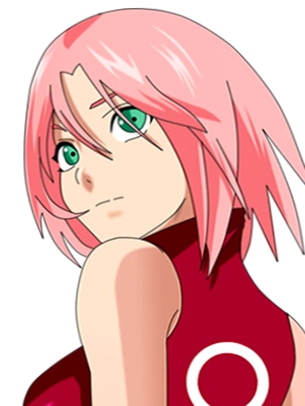
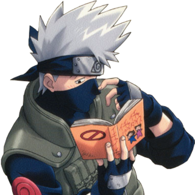

Sakura
Haruno

"I've always considered myself to be a true ninja… but those were just empty words, because Sasuke and Naruto were always in the lead! But now it's my turn to take the lead, and all of you can watch me from the background!" - Sakura Haruno
Goal: To marry Sasuke Uchiha and become a medical ninja.
Description: The final member of Team 11. Head-strong, coupled with a mean temper and an incredible intellect.
She excels in all of her classes and is the glue that holds Team 11 together.
Later Years: Under the personal tutelage of the legendary Sanin, Lady Tsunade (The Fifth Hokage), Sakura becomes an incredible medical ninja and plays a vital role during "The Fourth Great Ninja War".
After the final battle between Naruto and Sasuke, Sakura starts a relationship with Sasuke leading to their eventual marriage. The two have a child called Sarada Uchiha who has also awakened her sharigan.
Kakashi
Hatake

"In the ninja world, those who break the rules are trash, that's true, but those who abandon their comrades are worse than trash." - Kakashi Hatake
Goal: To protect his friends and the Ninja world from oncoming evil threats.
Description: After losing his parents and closest friends during "The Third Great Ninja War", Kakashi became stern, aloof and cold towards other.
While on a high-level mission with his friend Obito Uchiha, Kakashi was entrusted with Obito's right eye before he died. Obito had just awakened his Sharingan. With this eye Kakashi earned the nickname "The Copy Ninja", able to read his opponents movements and copy their Jutsu.
Later Years: Kakashi has mastered over a thousand Jutsu and uses them all in "The Forth Great Ninja War". Kakashi was also informed that he would become The Sixth Hokage once the war was over.
Kakashi came face to face with the masked man behind the war, the identity of whom shock him. Kakashi served as Hokage for Konoha allowing Naruto to prepare for the role.